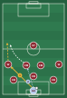
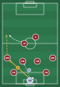
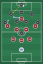
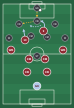

In possession


Short or long? A mix. The coaches decide on the day, depending on the other team and the score.
GK → wide → down the line. The wingerwing back takes it and plays it first time down the line for a runner: the nearest centre midthe 10, who starts deep and arrives late (Rule 6).
Out of possession


Press high or drop off? It depends on them. If they play it short, we press. If they usually go long, we drop off into our shape. The coaches call it.
The striker leads the press, with the nearest winger squeezing up alongside her. Curve your run to cut off the pass (Rule 1).
The 9 closes down their middle centre back and curves her run so the only pass is out wide (Rule 1). When it goes wide, she curves across to block the pass back to the middle. The 10 stays on her side and presses the wide centre back. The 9 and 10 don't cross.